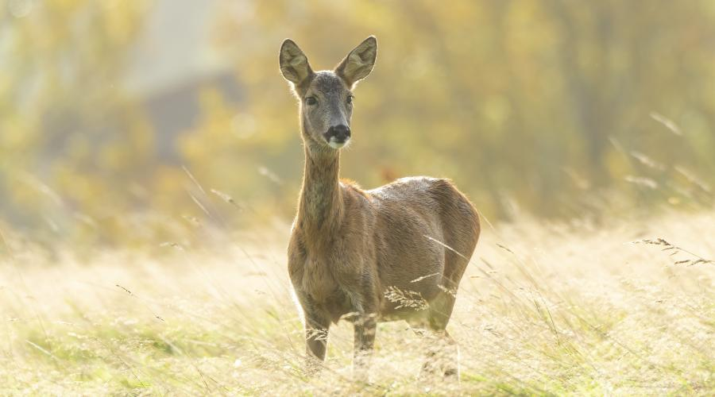
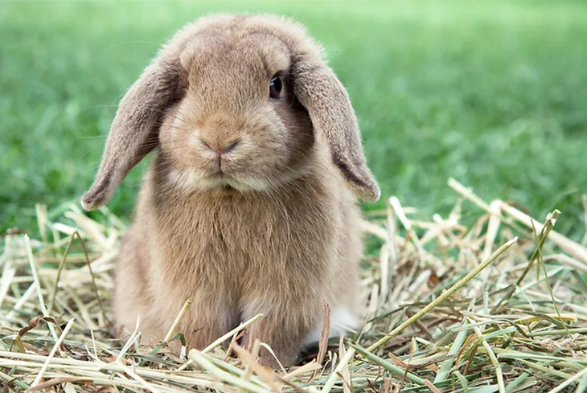

Deers are most common mammals around the world, which also makes them the most preyed upon by carnivores.
Males have horns on them and are referred to as bucks rather than deers. Coat color can vary from brown to red
and also have white tails as well.

2.Rabbit
Rabbits are small mammals and are also pretty common around the world, which also makes them the most preyed upons secondary meal for carnivores.
Their coats come in variety of colors, they can be brown, black, white, you name it. They mostly eat grass, fruits, carrots.

3.Elk
Elks are the second largest mammals within the deer family. Male ones have antlers while the female ones dont. Elks are mostly hunted by wolves, cougars
and even bears. Elks primarly eat grass but depending on the seasons, they kind of have to strategize in terms of how to acquire vegetation in which they want to consume.
Winter for instance makes it difficult to consume grass growing from the ground so they would have to focus on brush vegetation.